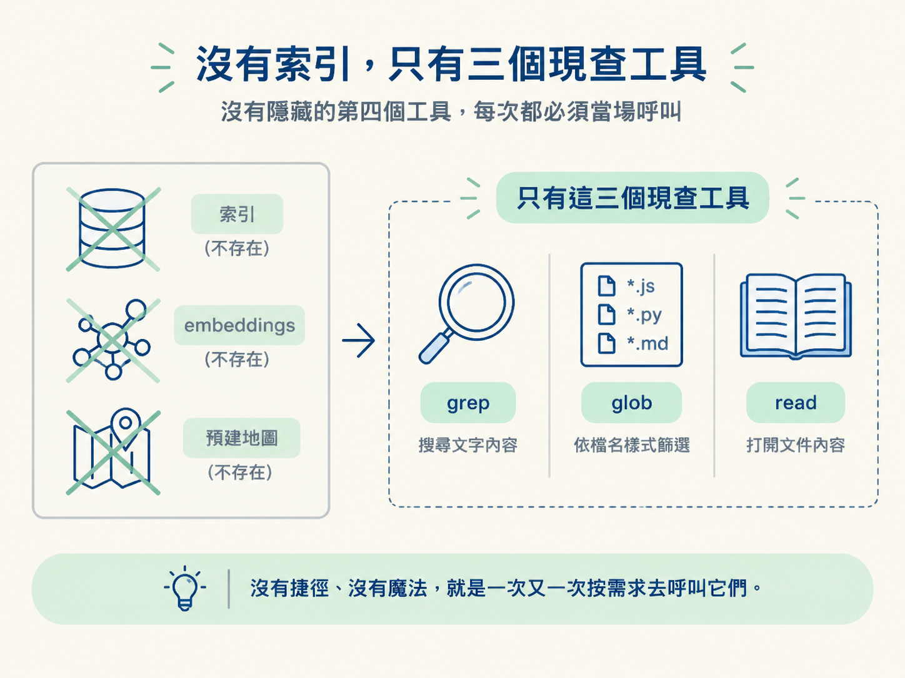
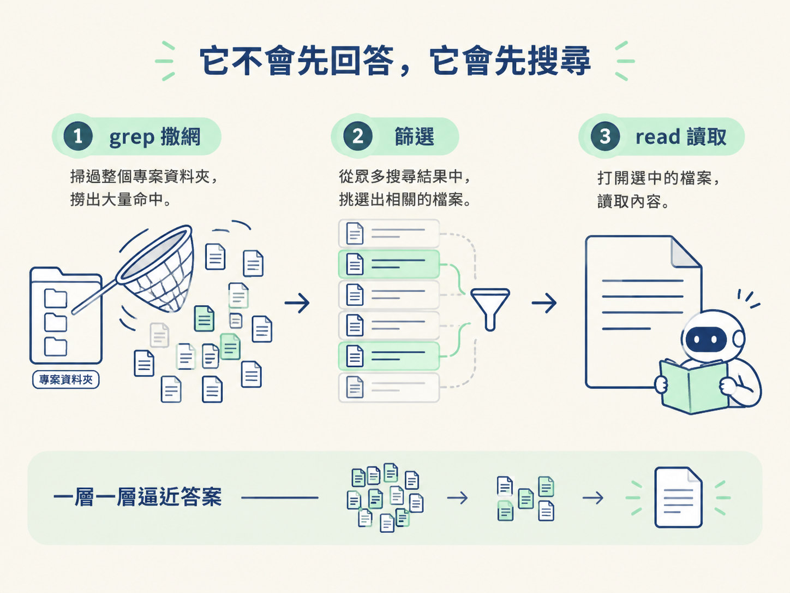

解釋 agent 為什麼沒有索引或預建地圖，只能靠 grep、glob、read 三個工具現場找路，並說出它每次找東西的動作順序。
上一節講完「agent 只知道它讀過的東西」，接下來的疑問就很自然了：那它到底怎麼「找到該讀什麼」？
多數人心裡都有一個預設畫面：它背後大概像 Google，有一份早就建好的索引，你問什麼，它就去查什麼，答案瞬間掉出來。這個想像很合理，但它是錯的。
錯得滿關鍵。因為你對 agent 的期待、你覺得專案該怎麼整理，全都會跟著這個假設走。如果你以為它看過整個 repo，就會期待它「早就知道」；如果你以為它只是現場找路，你就會明白為什麼檔案命名、資料夾分層這麼重要。
這一節把真相講清楚：它背後沒有索引、沒有 embeddings 資料庫、也沒有預先畫好的專案地圖。它找東西的方式，跟你第一天踏進一個陌生 codebase 沒有兩樣：搜尋，然後打開檔案來看。
既然沒有索引，它靠什麼認路？答案樸素到有點讓人失望，就是三個工具：
| 工具 | 它做的事 | 什麼時候用 |
|---|---|---|
| grep | 在一堆檔案裡搜尋某段文字 | 知道功能的關鍵字，不知道檔案在哪 |
| glob | 依檔名模式找出符合的檔案 | 知道檔名大概長怎樣，想先圈出範圍 |
| read | 打開一個檔案，看裡面寫了什麼 | 已經鎖定某個檔案，要讀它的內容 |
就是這三個，沒有藏在後面的第四個工具。它沒有「先幫你把整個專案掃過一遍存起來」這種作弊手段，每一次要找東西，都得當場呼叫這些工具。課程用一句話總結：沒有捷徑、沒有魔法，就是一次又一次按需求去呼叫它們。

所以它跟你一樣，一定是先搜尋、再讀取。它不是一坐下來就「知道」auth 程式碼在哪個資料夾，而是先用 grep 把可能的位置撈出來，再決定要打開哪一個檔案。
要感受這件事，最有畫面的方式就是在一個全新的 context 上問它問題。課程的示範正是如此：在一個它還沒讀過任何東西的 demo 專案上，直接問一句「where is auth handled in this project?」（這個專案的 auth 在哪裡處理？）。
它的反應不是給答案，而是開始搜尋。它會用 bash 去撈檔案；如果你把 bash 裡面執行的東西展開來看，會發現跑的其實就是一條很普通的 grep，搜尋的關鍵字是 auth。
這裡有個細節：它撒的是一張很大的網。在那個當下，它根本還不知道 auth 落在哪個資料夾，只能用最寬的關鍵字去掃。它唯一比較有把握的，是這個專案大概是用 TypeScript 或 JavaScript 寫的，所以就從這些檔案下手。
換句話說，它找東西的順序固定是三步：先搜尋（grep 撒網）→ 再篩選（從一堆結果裡挑出相關的）→ 最後讀取（打開選中的檔案）。這不是它偷懶，而是它手上真的只有這三個工具，只能這樣一層一層逼近答案。

agent 背後沒有索引、沒有 embeddings、沒有預建地圖。它找東西只有 grep（搜文字）、glob（依檔名找）、read（開檔）三個工具，而且每次都得當場呼叫，沒有捷徑。所以面對「auth 在哪」這種問題時，它的第一個動作不是回答，是先用 grep 撒一張大網，再篩選、再讀取。
知道它有三個工具，還只是知道零件。真正有意思的是把這個過程放在真實 codebase 上跑一遍，看它怎麼從一句模糊的問題，一路走到一份精準的答案。下一節我們就照著它的順序，完整追一次「auth 在哪」的搜尋路徑。